Introduction
The concept for this project started with a simple picture I found on Pinterest. I have worked with individual models and stylized fan art before but I felt like I needed to really polish my environment creation skills. So this was a practice where I built hard surface models at a larger scale rather than a landscape.
The scene is a grey-brown environment with a low pass camera angle. I used a train model from SetchFab placed on the left side and a yellow soldier from SetchFab for scale. This was also a project where I practised material layering quite a bit.
Concept Phase
The concept board pulled together reference images of industrial architecture and train stations. I wanted the final scene to feel grounded like a place that could actually exist.

Laying the Foundation
The first renders show the initial structural blockout. I started with the track layout and platform positioning then built the support columns and overhead canopy. The scale was tricky and I had to keep checking that the proportions felt right.
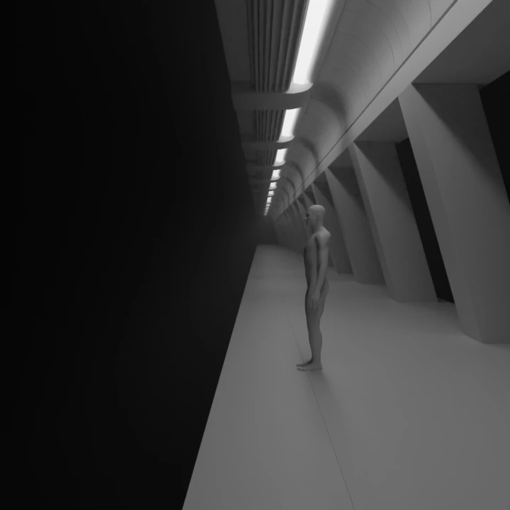
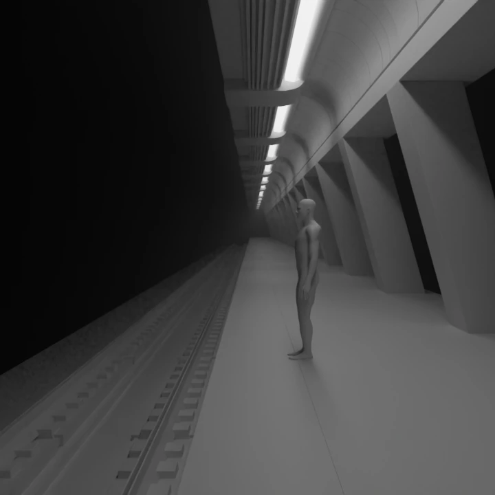
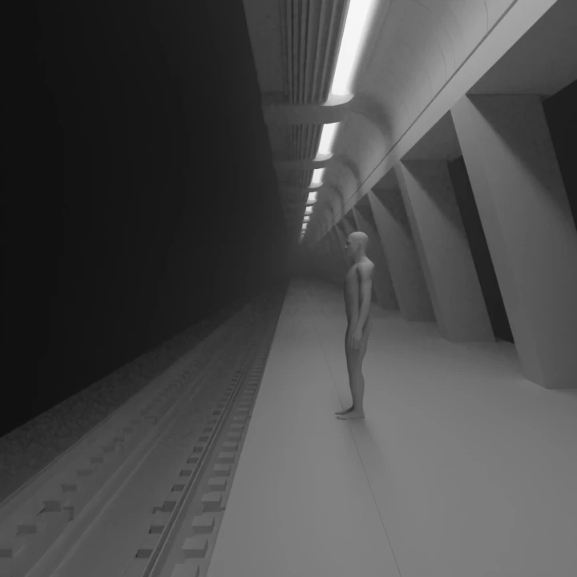
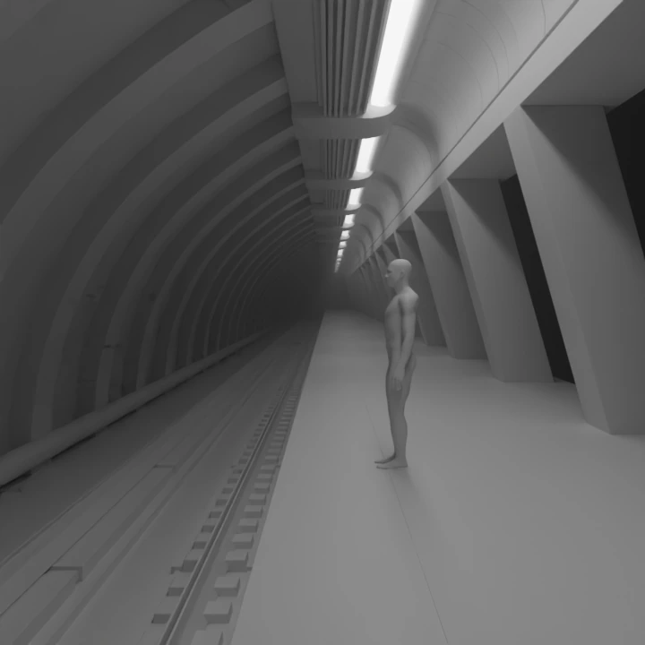
Structural Refinement
With the base layout locked I moved into refining the structural elements. The columns got more definition and the canopy gained paneling. This is where I started working on material layering to separate the different surfaces.
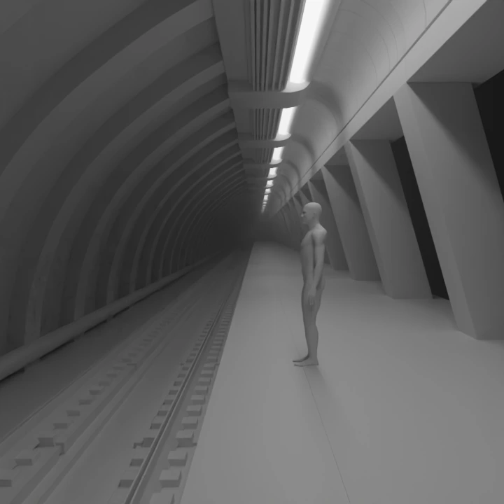
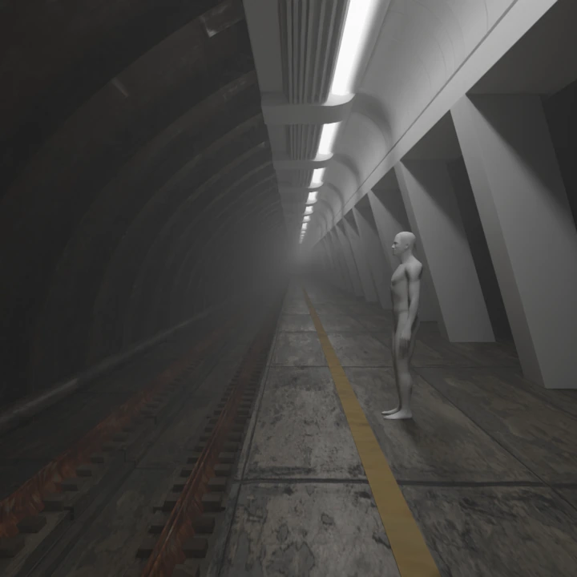
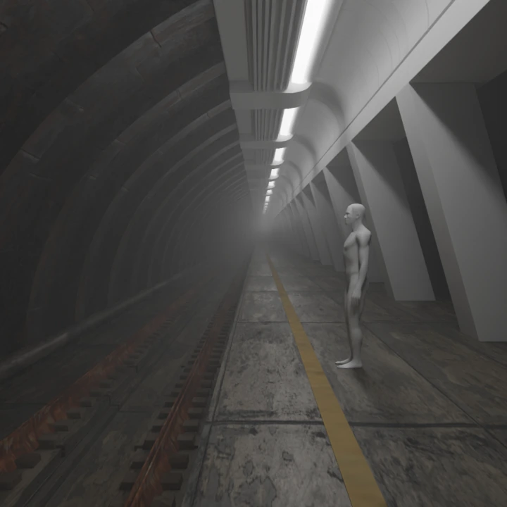
Renders 5 through 7 show the station gaining density. The space started feeling more enclosed and industrial which was the direction I wanted.
Detailing and Polish
The final stretch was about polish. I added railings, signal equipment, warning stripes and smaller mechanical elements. This is where the scene went from a blockout to something that actually looks like a render.
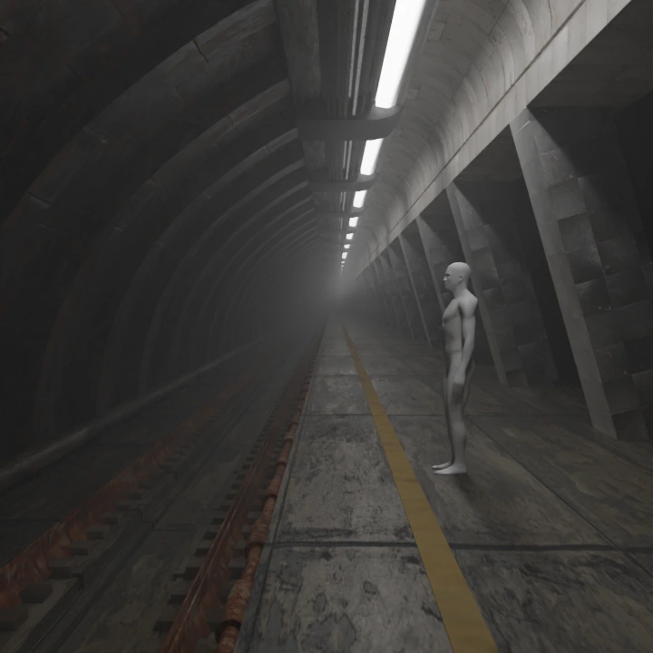
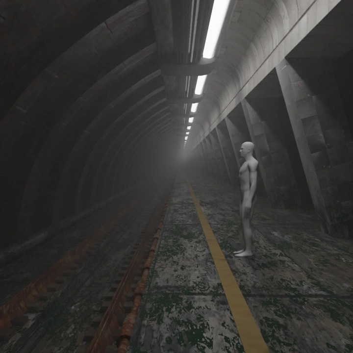
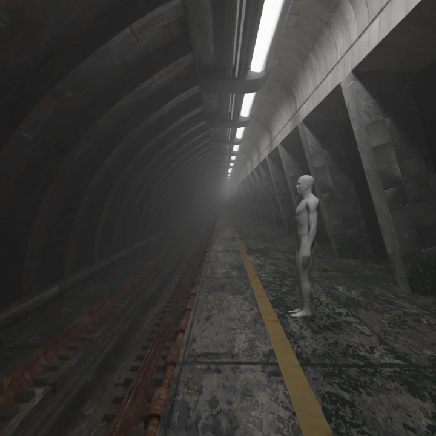
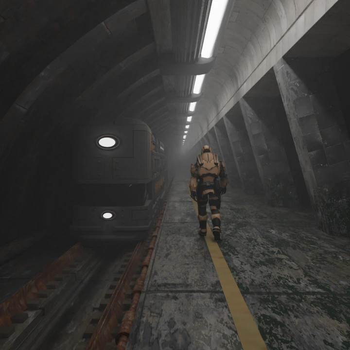
Final Render
The final render captures the full station scene. The grey-brown palette, the low camera angle, the train on the left and the yellow soldier for scale all come together. The material layering work I did here really helped sell the different surfaces.
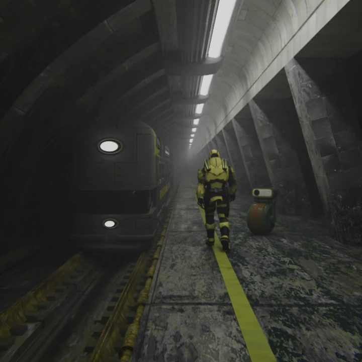
MiniBot
The MiniBot prop is something I created in under 2 hours just for this scene. It is a small robot character to add a bit of life to the environment.
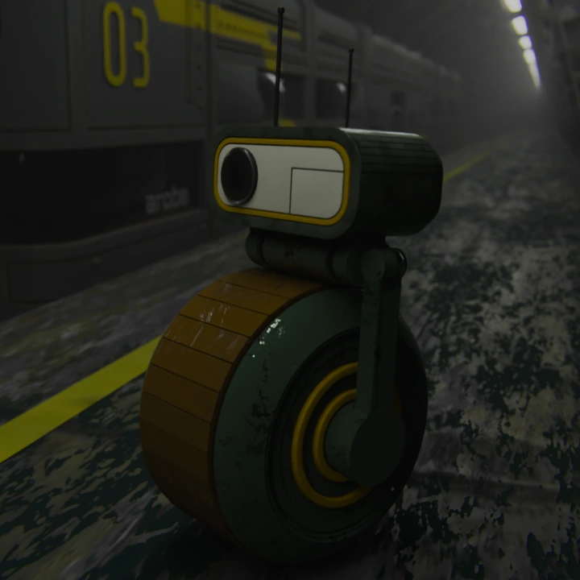